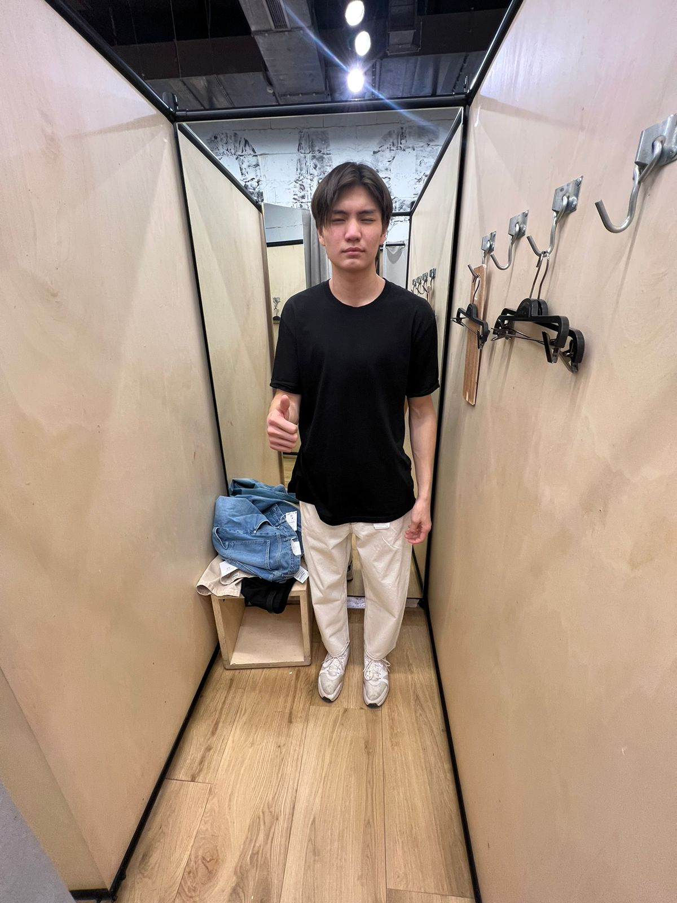

Дархан-өзіне назар аударатын өте әдемі, ұзын бойлы адам. Оның бет-әлпеті кесілген және жақсы анықталған, бұл оған сенімділік пен сүйкімділік береді, бұл оны кездескендердің арасында бірден Хит етеді. Дегенмен, оның тартымды келбеті оны соншалықты керемет дос ететін нәрсенің аз ғана бөлігі. Дарханның мейірімді және жомарт табиғаты оны шынымен ерекшелендіретін нәрсе. Ол әрқашан тыңдауға, қолдау көрсетуге және мұқтаж жандарға көмектесу үшін қолдан келгеннің бәрін жасауға дайын. Оның мызғымас адалдығы мен шынайылығы оны өмірінде кез келген адам бақытты болатын дос етеді.
